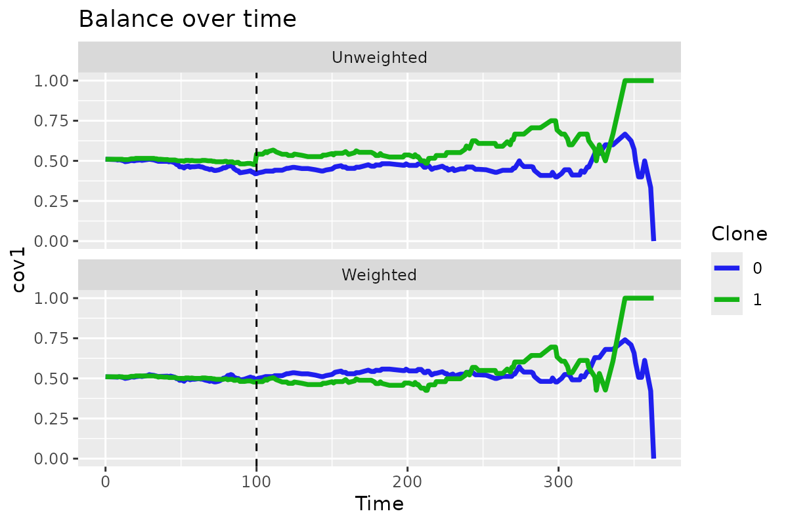

How to Conduct a Clone Censor-Weight Survival Analysis using survivalCCW
Matthew Secrest
conduct-ccw-analysis.RmdClone Censor Weighting
This lightweight package describes how to conduct clone-censor weighting (CCW) to address the problem of immortal time bias in survival analysis. This vignette will walk through the applied tutorial published by Maringe et al 2020. Refer to Gaber et al 2024 for more details on CCW in practice and to Hernan and Robins 2016 for more technical details.
Context
CCW is useful in the presence of immortal person-time bias in observational studies. For instance, when comparing surgery recipients vs non-recipients in non-small cell lung cancer (NSCLC), the surgery group will have a longer survival time than the non-surgery group because the non-surgery group includes patients who died before they could receive surgery. This is a form of immortal time bias.
The CCW toy dataset published by Maringe uses this exact setting as
the motivating example. Let’s explore the dataset, which comes with
survivalCCW.
library(survivalCCW)
library(DT) # For better printing of data.frames
head(toy_df) |>
DT::datatable(
rownames = FALSE,
options = list(
scrollX = TRUE,
paging = FALSE
)
)Column descriptions can be found with ?toy_df:
-
id: patient identifier -
fup_obs: observed follow-up time (time to death or 1 year if censored alive) -
death: observed event of interest (all-cause death) 1: dead, 0: alive -
timetosurgery: time to surgery (NA if no surgery) -
age: age at diagnosis -
sex: patient’s sex -
perf: performance status at diagnosis -
stage: stage at diagnosis -
deprivation: deprivation score -
charlson: Charlson’s comorbidity index -
emergency: route to diagnosis
Note that this package addresses situations in which the covariates are all defined at baseline.
Create clones
The first step is to create the clones. This can be done for any
time-to-event outcome using the survivalCCW function
create_clones. For create_clones to work, we
need to pass a one-row-per-patient data.frame with the
following columns:
- The id variable (in this case,
id) - The traditional outcome variable which denotes censorship (0) or
event (1) (in this case,
death). Note that additional values are not yet permitted. - The time to the first event (in this case,
fup_obs) - The exposure variable, with exposure defined at any time
prior to censorship/event (in this case,
surgery). Must be (0) or (1), - The time to exposure variable (in this case,
timetosurgery) - The clinical eligibility window (in this case, we’ll do 6 months)
All other columns will be propogated for each patient. Let’s see what this looks like in practice.
# Create clones
clones <- create_clones(
df = toy_df,
id = 'id',
event = 'death',
time_to_event = 'fup_obs',
exposure = 'surgery',
time_to_exposure = 'timetosurgery',
ced_window = 182.62
)
head(clones) |>
DT::datatable(
rownames = FALSE,
options = list(
scrollX = TRUE,
paging = FALSE
)
)Note that this object is just a data.frame with an
additional custom class which future functions will evaluate:
class(clones)
#> [1] "ccw_clones" "data.frame"You can visualize the censoring over time after you create the clones:
plot_censoring_over_time(clones)
Cast to long format
Now we simply need to cast the data to long format. The
survivalCCW function cast_to_long will do this
for us. No additional arguments are needed (the clones
object is an artifact that allows you to better see and understand the
method):
clones_long <- cast_clones_to_long(clones)
head(clones_long, row.names = FALSE) |>
DT::datatable(
rownames = FALSE,
options = list(
scrollX = TRUE,
paging = FALSE
)
)Let’s pick out a single patient and look at their data:
Generate weights
Now we simply need to generate the weights. The
survivalCCW function generate_ccw() will do
this for us.
clones_long_weights <- generate_ccw(clones_long, predvars = c("age", "sex", "perf", "stage", "deprivation", "charlson", "emergency"))
head(clones_long_weights) |>
DT::datatable(
rownames = FALSE,
options = list(
scrollX = TRUE,
paging = FALSE
)
)Let’s pick out a single patient and look at their data:
clones_long_weights[clones_long_weights$id == "P5913", ] |>
DT::datatable(
rownames = FALSE,
options = list(
scrollX = TRUE,
paging = TRUE
)
)You can also visualize weights over time with
plot_ccw_over_time() and mean values over time with
plot_var_mean_over_time().
clones_long_weights |>
plot_ccw_over_time()
clones_long_weights |>
plot_var_mean_over_time("age")
Evaluate outcomes
We now have everything we need to conduct a CCW analysis. For instance, we can pipe things together to evaluate the hazard ratio for surgery vs no surgery:
library(survival)
df <- toy_df |>
create_clones(
id = 'id',
event = 'death',
time_to_event = 'fup_obs',
exposure = 'surgery',
time_to_exposure = 'timetosurgery',
ced_window = 365.25/2
) |>
cast_clones_to_long() |>
generate_ccw(c('age', 'sex', 'perf', 'stage', 'deprivation', 'charlson', 'emergency'))
coxph(Surv(t_start, t_stop, outcome) ~ clone, data = df, weights = weight_cox)
#> Call:
#> coxph(formula = Surv(t_start, t_stop, outcome) ~ clone, data = df,
#> weights = weight_cox)
#>
#> coef exp(coef) se(coef) robust se z p
#> clone -0.4988 0.6073 0.2153 0.2794 -1.785 0.0742
#>
#> Likelihood ratio test=5.51 on 1 df, p=0.01894
#> n= 22772, number of events= 62Note that we used outcome and not death in
the coxph() model. Still, there is of course a problem with
this analysis, as the cloning process renders the variance invalid. The
simplest approach to addressing this is to bootstrap the variance. I
have not made a function to do this yet, but leave the below as an
example of how to do this.
library(boot)
#>
#> Attaching package: 'boot'
#> The following object is masked from 'package:survival':
#>
#> aml
boot_cox <- function(data, indices) {
# Make long data.frame with weights
ccw_df <- data[indices, ] |>
create_clones(
id = 'id',
event = 'death',
time_to_event = 'fup_obs',
exposure = 'surgery',
time_to_exposure = 'timetosurgery',
ced_window = 182.62
) |>
cast_clones_to_long() |>
generate_ccw(c('age', 'sex', 'perf', 'stage', 'deprivation', 'charlson', 'emergency'))
# Extract HR from CoxPH
cox_ccw <- coxph(Surv(t_start, t_stop, outcome) ~ clone, data = ccw_df, weights = weight_cox)
hr <- cox_ccw |>
coef() |>
exp()
out <- c("hr" = hr)
# Create survfit objects for each of treated and untreated
surv_1 <- survfit(Surv(t_start, t_stop, outcome) ~ 1L, data = ccw_df[ccw_df$clone == 1, ], weights = weight_cox)
surv_0 <- survfit(Surv(t_start, t_stop, outcome) ~ 1L, data = ccw_df[ccw_df$clone == 0, ], weights = weight_cox)
# RMST difference
rmst_1 <- surv_1 |>
summary(rmean = 365) |>
(\(summary) summary$table)() |>
(\(table) table["rmean"])()
rmst_0 <- surv_0 |>
summary(rmean = 365) |>
(\(summary) summary$table)() |>
(\(table) table["rmean"])()
rmst_diff <- rmst_1 - rmst_0
out <- c(out, "rmst_diff" = rmst_diff)
# 1-year survival difference
# Find the index of the time point closest to 1 year
index_1yr_1 <- which.min(abs(surv_1$time - 365))
index_1yr_0 <- which.min(abs(surv_0$time - 365))
# Get the 1-year survival probabilities
surv_1_1yr <- surv_1$surv[index_1yr_1]
surv_0_1yr <- surv_0$surv[index_1yr_0]
surv_diff_1yr <- surv_1_1yr - surv_0_1yr
out <- c(out, "surv_diff_1yr" = surv_diff_1yr)
}
boot_out <- boot(data = toy_df, statistic = boot_cox, R = 10)Hazard ratios
boot.ci(boot_out, type = "norm", index = 1)
#> BOOTSTRAP CONFIDENCE INTERVAL CALCULATIONS
#> Based on 10 bootstrap replicates
#>
#> CALL :
#> boot.ci(boot.out = boot_out, type = "norm", index = 1)
#>
#> Intervals :
#> Level Normal
#> 95% ( 0.1945, 0.9168 )
#> Calculations and Intervals on Original ScaleRMST
boot.ci(boot_out, type = "norm", index = 2)
#> BOOTSTRAP CONFIDENCE INTERVAL CALCULATIONS
#> Based on 10 bootstrap replicates
#>
#> CALL :
#> boot.ci(boot.out = boot_out, type = "norm", index = 2)
#>
#> Intervals :
#> Level Normal
#> 95% (-10.629, 19.976 )
#> Calculations and Intervals on Original Scale1-year survival
boot.ci(boot_out, type = "norm", index = 3)
#> BOOTSTRAP CONFIDENCE INTERVAL CALCULATIONS
#> Based on 10 bootstrap replicates
#>
#> CALL :
#> boot.ci(boot.out = boot_out, type = "norm", index = 3)
#>
#> Intervals :
#> Level Normal
#> 95% ( 0.0066, 0.2580 )
#> Calculations and Intervals on Original ScaleCompeting risks
The extension of the package functionality to issues of competing risks is trivial. We keep our outcome variable as an integer but add additional values.
toy_df$competing <- sample(0:2, nrow(toy_df), replace = TRUE)
head(toy_df) |>
DT::datatable(
rownames = FALSE,
options = list(
scrollX = TRUE,
paging = FALSE
)
)We can then conduct the same analysis as before, but with the
competing variable as the outcome. The bootstrapped
analysis is not shown, but you can see that hte same approach can be
used.
compete_ccw <- toy_df |>
create_clones(
id = 'id',
event = 'competing',
time_to_event = 'fup_obs',
exposure = 'surgery',
time_to_exposure = 'timetosurgery',
ced_window = 365.25/2
) |>
cast_clones_to_long() |>
generate_ccw(c('age', 'sex', 'perf', 'stage', 'deprivation', 'charlson', 'emergency'))
table(compete_ccw$outcome)
#>
#> 0 1 2
#> 22625 76 71
head(compete_ccw) |>
DT::datatable(
rownames = FALSE,
options = list(
scrollX = TRUE,
paging = FALSE
)
)Winsorizing weights
You can trim/winsorize extreme weights using the
winsorize_ccw_weights() function:
compete_ccw_trim <- compete_ccw |>
winsorize_ccw_weights(quantiles = c(0.10, 0.90))
max(compete_ccw$weight_cox)
#> [1] 21.62294
max(compete_ccw_trim$weight_cox)
#> [1] 2.75609References
Hernán, Miguel A., and James M. Robins. “Using big data to emulate a target trial when a randomized trial is not available.” American journal of epidemiology 183.8 (2016): 758-764.
Gaber, Charles E., et al. “The Clone-Censor-Weight Method in Pharmacoepidemiologic Research: Foundations and Methodological Implementation.” Current Epidemiology Reports (2024): 1-11.
Maringe, Camille, et al. “Reflection on modern methods: trial emulation in the presence of immortal-time bias. Assessing the benefit of major surgery for elderly lung cancer patients using observational data.” International journal of epidemiology 49.5 (2020): 1719-1729.